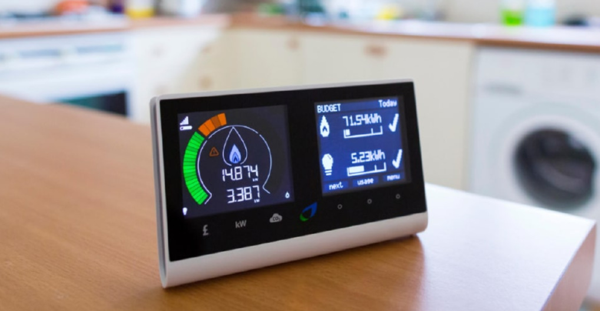

<html><head>
		<link href="styles/style.css" type="text/css" rel="stylesheet">
		<title>FAB LAB FAISAL-REHMAN</title>
			<style>
							button.accordion {
					background-color: #eee;
					color: #444;
					cursor: pointer;
					padding: 18px;
					width: 100%;
					border: none;
					text-align: left;
					outline: none;
					font-size: 15px;
					transition: 0.4s;
				}

				button.accordion.active, button.accordion:hover {
					background-color: #ddd;
				}

				div.panel {
					padding: 0 18px;
					background-color: white;
					max-height: 0;
					overflow: hidden;
					transition: max-height 0.2s ease-out;
				}
			
			.mycodingfont
			{
					font-family: "Courier New", Courier, monospace	;
					border-style: solid;
					border-width:1px;
					width:100%;
					padding:30px;
			}
			

		</style>
			
	</head>
	
	<body data-gr-c-s-loaded="true">
		<div id="main">
			<div id="header">
				<div id="logo">
					
				</div>
				<div id="header-title">
					<div id="header-title-text">
						<div>FAB ACADEMY 2020</div>
						
					</div>
				</div>
				<div id="bcn-logo">
					<a href="http://fabacademy.org"></a>
				</div>
			</div>
			<hr>
			<div id="nav-bar">
				
					<div class="link"><a href="index.html">Home</a></div><div class="headerDivider"></div>
					<div class="link"><a href="final_project.html">Final Project</a></div><div class="headerDivider"></div>
					<div class="link"><a href="aboutme.html">About Me</a></div>
					<div class="clear"></div>
				
			</div>
			<hr>
			<div id="MainContainer">
				<div id="container-title">Final Project</div>
				<div id="content-area">
				<font size="4">	
				
				
				<p></p><center></center><p></p>
				
				<br>
				<br>
				<h3>Smart IoT based Energy Metering Devices using the ADE7757.</h3>
				<h3><p> Project Introducation</p></h3>
                <p> My Project is to design the Samrt IoT Based Energy Metering Devices , This Device  will Moniter  The Electrical Power and Energy Consumption on real time and at the same time it will send the data to the Cloud, Where User as well as Suplier can Moniter the Actual Energy Consumptions,By Using this Devices We can Our come the Miss use  of  Energy Consumptions.   We can use in Home,Collage ,University, Small Industory as well as We Can Attached this Small Device with any Appliances like a Air Conditioners,Refrigerator,Heater,Motors and others to Moniter the each Second Energy Consumptions. </p>
                <h3>  Energy Monitering ICS and Family</h3>
                <p> I Have study the lot of ICs which are used to  measuring the Electrical Energy and Power Conumption  and Monitering the real time load consume.So here are the list of the ICs Which are measuring the Power</p>
                 <h3> Analog ICS Family for Power Consumption </h3> 
                 <li> This the List of the Analog Family <a href="https://www.analog.com/en/parametricsearch/10577#/"> <b> HERE </b> </a></li>
                <li> ADE7758  Poly pahse Energy meter Data Sheet is Available  <a href="https://pdf1.alldatasheet.com/datasheet-pdf/view/85919/AD/ADE7758.html"> <b> HERE </b> </a> </li>
                <li> ADE7757 Single Phase Energy meter Data Sheet is Available <a href="https://www.analog.com/media/en/technical-documentation/data-sheets/ADE7757.pdf"> <b> HERE </b> </a>  </li>
                <h3> ADE7757- Signle phase Energy Monitering ICS</h3>
                <p> I have planed that I will use  this ICs ADE7757 Single Phase </p>
                <p> The ADE7757 is a high accuracy electrical energy measurement
                 IC. It is a pin reduction version of the ADE7755 with an enhancement of a precise oscillator circuit that serves as a clock source
                 to the chip. The ADE7757 eliminates the cost of an external
                 crystal or resonator, thus reducing the overall cost of a meter
                 *U.S. Patents built with this IC. The chip directly interfaces with the shunt
                 resistor and operates only with ac input.</p>
                <h3> Silent Features</h3>
                <p> On-Chip Oscillator as Clock Source
                   High Accuracy, Supposes 50 Hz/60 Hz IEC 521/IEC 61036
                   Less than 0.1% Error over a Dynamic Range of 500 to 1
                   The ADE7757 Supplies Average Real Power on the
                   Frequency Outputs F1 and F2
                   The High Frequency Output CF Is Intended for
                   Calibration and Supplies Instantaneous Real Power
                   The Logic Output REVP Can Be Used to Indicate a
                   Potential Miswiring or Negative Power
                   Direct Drive for Electromechanical Counters and
                   2-Phase Stepper Motors (F1 and F2)
                   Proprietary ADCs and DSP Provide High Accuracy over
                   Large Variations in Environmental Conditions and
                    Time On-Chip Power Supply Monitoring
                   On-Chip Creep Protection (No Load Threshold)
                   On-Chip Reference 2.5 V (20 ppm/C Typical)
                   with External Overdrive Capability
                   Single 5 V Supply, Low Power (20 mW Typical)
                   Low Cost CMOS Process AC Input Only</p>
                   <p> This the Funactional Block diagram of the ADE7757 ICs</p>
                   <center> </center>
                   <p> ADE7757  Data Sheet is Available   for more Deatils <a href="https://pdf1.alldatasheet.com/datasheet-pdf/view/85919/AD/ADE7758.html"> <b> HERE </b> </a> </p>
                   <p> After the huge Research Finaly I have Plan to Use the ADE7757 Analog IC and Design the Energy Measuring Device.</p>
                   <center> </center> 
                    <p> This the  is PIN DiaGram of the ADE7757 ICs basically it  has 16 Pin Diagram this the Pin deatils of The ICs</p>
                    <center> </center>
                    <h3> Input and Output Channel of the ICs ADE7757</h3>
                    <h2> Input AC Channel: </h2>
                    <li> Volage Channel </li>
                    <li> Current Channel</li>
                    <h2> Output Channel</h2>
                    <p> It has also two Output channel: </p>
                    <li> F1, F2 are used for the Machnical Counter Out put Channel.</li>
                    <li> CF Pin is Digital Output Pin that used to interface with Micro Controller.</li>
                    <p> This the Circuit Diagram Which i have to design for My Final Project</p>
                    <center> </center>
                    <h3> Now The Phase is to Design the Circuit using the  Eagle Software , First Download the ADE7757 Library From  <a href="https://componentsearchengine.com/ADE7757/Analog+Devices"><b> HERE </b> </a> and add in eagle Software.</h3>
                    <h3><p>Weeks are Covered</p></h3>
                    <h3><p> Week-1 : Web designing</p></h3>
                    <h3><p> Week-2 : Project Management</p></h3>
                    <h3><p> Week-3 : Computer-Aided Design </p></h3>
                    <h3><p> Week-4 : Electronics Design</p></h3>
                    <h3><p> Week-5:  Embedded Programming </p></h3>
                    <h3><p> Week-6 : Input Devices</p></h3>
                    <h3><p> Week-7 : Output Devices</p></h3>
                    <h3><p> Week-8 : Networking and Communications </p></h3>
                    <h3><p> Week-9 : Computer-Controlled Machining </p></h3>
                    <h3><p>Week-10 : Project Development</p></h3>
</font></div></div></div></body></html>